Git
一、安装
安装地址: https://npm.taobao.org/mirrors/git-for-windows/
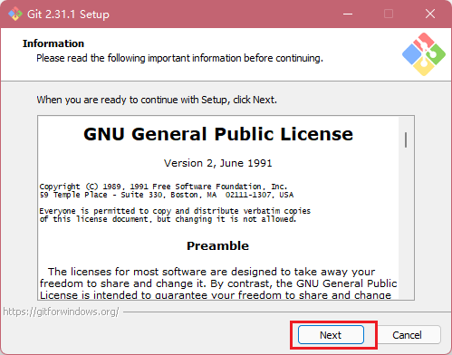
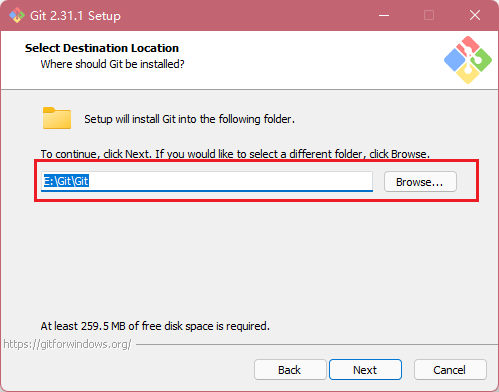


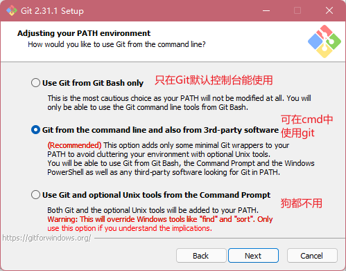

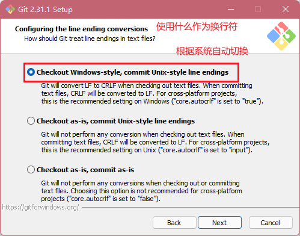
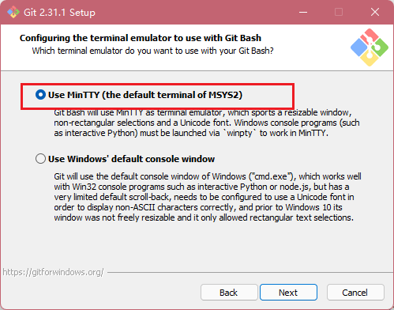
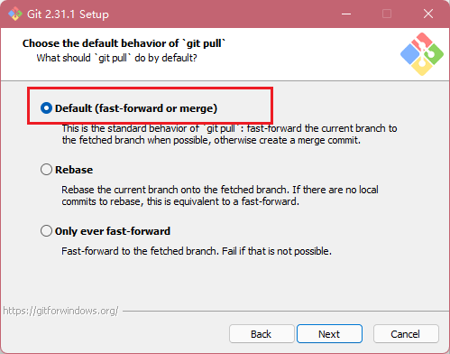

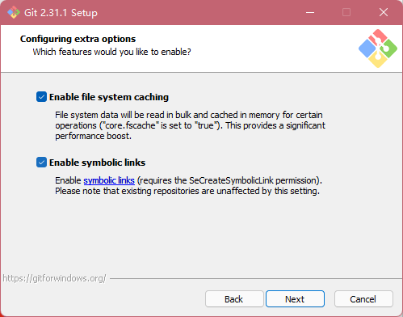
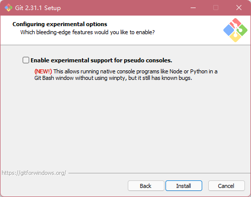
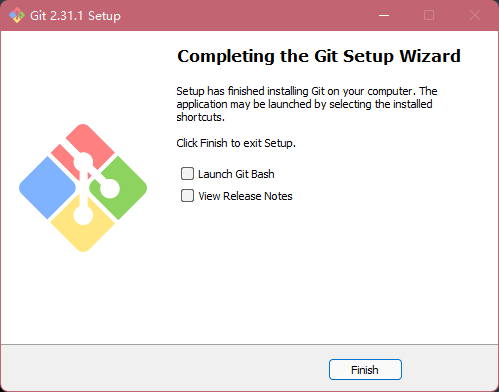
打开


二、Git 常用命令
| 命令名称 | 作用 |
|---|---|
| git config --global user.name 用户名 | 设置用户签名 |
| git config --global user.email 邮箱 | 设置用户签名 |
| git init | 初始化本地库 |
| git status | 查看本地库状态 |
| git add 文件名 | 添加到暂存区 |
| git commit -m "日志信息" 文件名 | 提交到本地库 |
| git reflog | 查看历史记录 |
| git reset --hard 版本号 | 版本穿梭 |
(一)、创建用户签名
签名的作用是区分不同操作者身份。用户的签名信息在每一个版本的提交信息中能够看 到，以此确认本次提交是谁做的。Git 首次安装必须设置一下用户签名，否则无法提交代码。
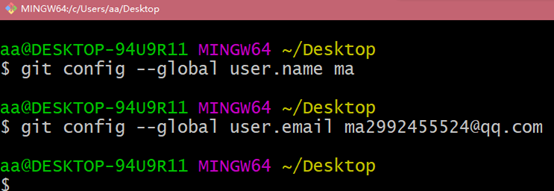
在C:\Users\aa.gitconfig中查看
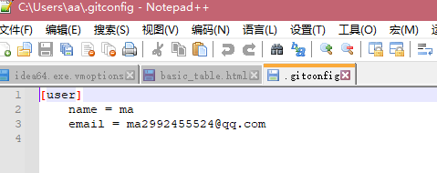
(二)、初始化本地库
1、进入一个项目中
2、右键打开git bashHere

3、输入git init会生成一个.git的文件
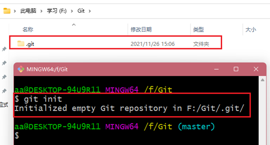
(三)、查看git状态
1、Git status

2、创建一个文件 vi ma.txt
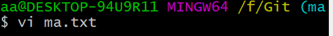
3、输入内容保存退出

4、再次使用git status命令
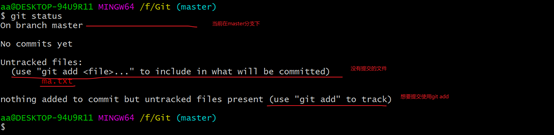
(四)、添加删除暂存区
1、git add 文件名

2、查看状态
Git status
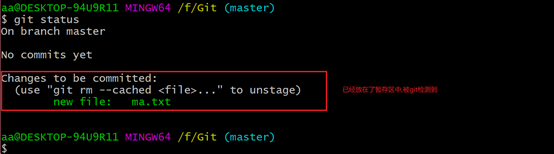
3、删除暂存区的文件
x1git rm - -cached 文件名

4、再次查看状态

说明删除只是删除了暂存区的文件,而本地的文件没有删除
5、再次提交
1git add 文件名

(五)、提交到远程仓库
1、git commit –m “my one commit” 文件名

2、查看状态

3、git reflog查看简单信息

4、git log查看详细信息
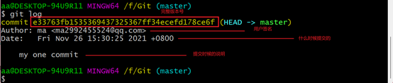
(六)、修改文件
1、vi ma.txt
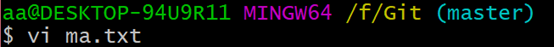
2、添加一列
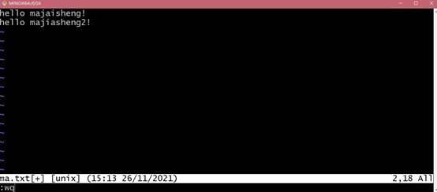
3、查看状态
git status
显示当前有数据更新,并且没被git追踪到
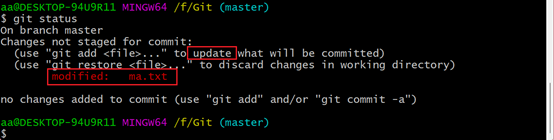
4、使用git add 文件名上传到缓存区

5、使用git commit –m “my two commit” 文件名

6、查看版本
git reflog
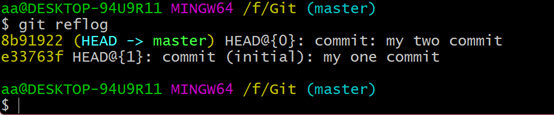
(七)、版本穿梭
1、首先查看git中有多少个版本
git reflog

2、查看当前版本的文件信息
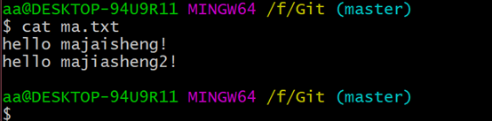
3、git refset –hard 版本号 穿梭到第一个版本
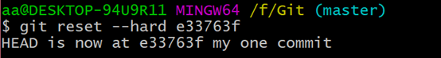
4、查看文件信息

5、穿梭到最新版本

6、查看文件

(八)、分支
1、分支的创建
x1git branch myFenZhi

2、查看分支
git branch -v
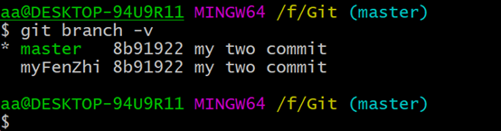
3、切换分支
git checkout myFenZhi

4、在分支下修改文件
vi ma.txt

5、切换到主分支
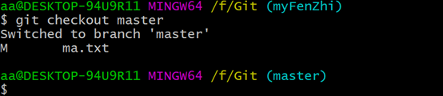
6、查看文件
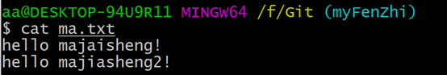
(九)、合并分支(正常合并)
1、首先进入master主分支
git merge master-1

2、查看文件
cat ma.txt
就能看到master-01上传本地仓库中ma.txt中的aaa添加到了mastet的ma.txt中
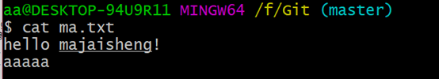
(十)、合并分支(冲突合并)
1、设置master的文件
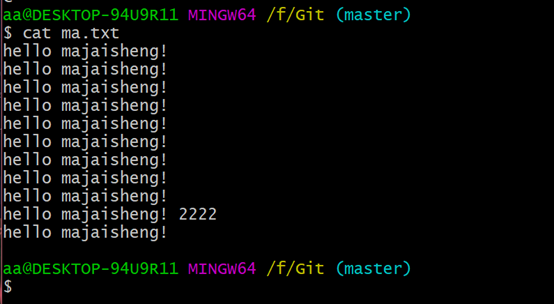
2、设置master-1文件

3、进入master

4、进行合并
此时发现状态是合并中,不是真正的master
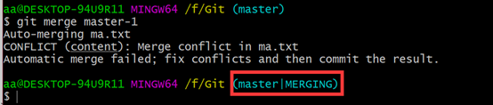
5、进入ma.txt文件
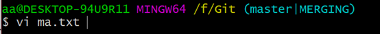
6、删除冲突的地方


7、添加到缓存区
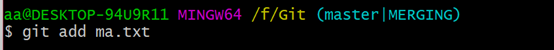
8、添加到本地仓库不添加文件名

这时候就合并好了
三、GitHub
(一)、创建远程库&起别名
1、登录github

2、输入账号密码
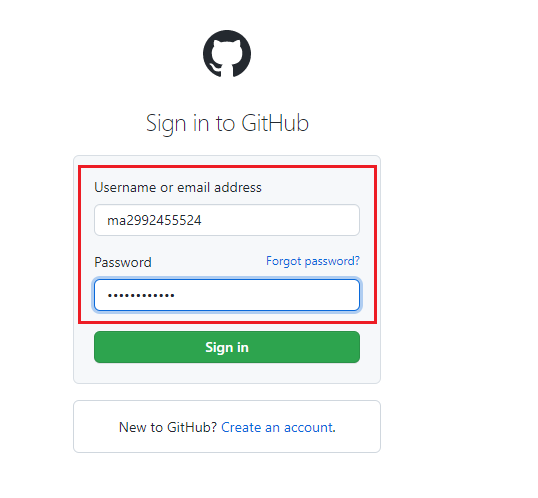
3、邮箱验证


4、创建项目

5、获取http连接

6、使用git起别名
Git remote add 别名 github连接
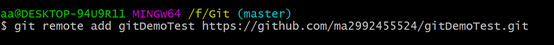
7、查看别名
Git remote -v

(二)、上传远程仓库(最小分支单位)
1、上传
Git push 别名(连接名) 分支名

2、使用浏览器登录

3、上传成功

4、验证

(三)、拉取远程仓库到本地仓库
1、修改远程仓库的文件
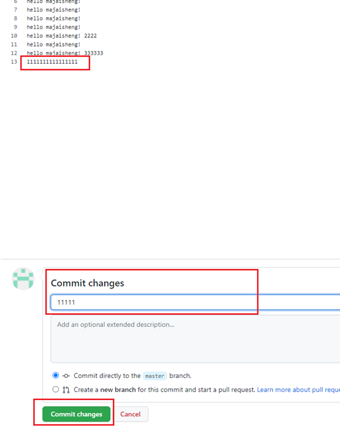
2、本地仓库拉取
Git pull 别名(连接名) 拉取的分支名
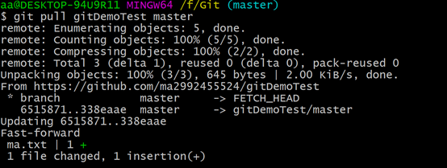
3、查看文件
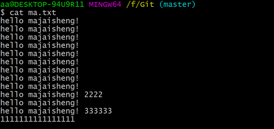
(四)、克隆远程仓库到本地
克隆仓库做了三件事
1:克隆文件
2:创建本地仓库
3:给连接起别名
1、新建一个文件

2、进入文件打开git
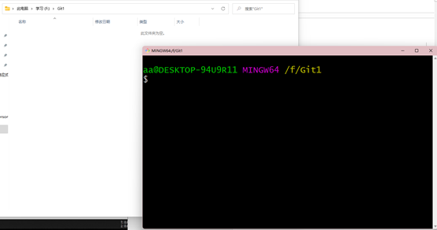
3、克隆远程仓库
Git clone 连接

4、查看文件
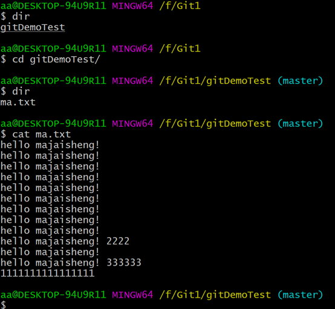
5、查看别名

(五)、团队协作
1、邀请别人加入你的团队

2、填入想要合作的人

3、复制地址并通过微信等方式发送给该用户

4、在被邀请账号中的地址栏复制收到邀请的链接，点击接受邀请

5、成功之后可以在被邀请这个账号上看到 git-Test 的远程仓库
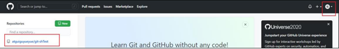
6、邀请账号修改上传文件
vim hello.txt
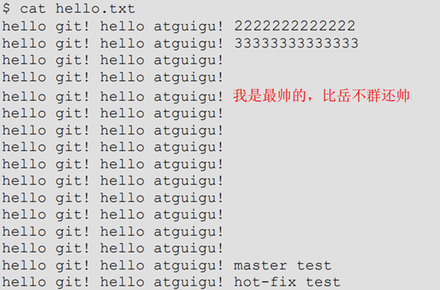
7、上传缓存区—本地仓库—远程仓库

8、主用户拉取文件

9、查看文件

(六)、跨团队协作
1、将自己仓库地址发给别人
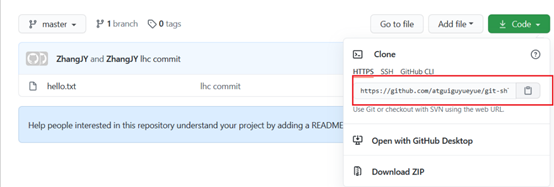
2、使用别人账号打开网址点击fork叉到自己仓库
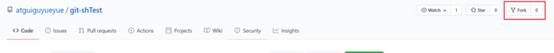
3、插入后查看信息
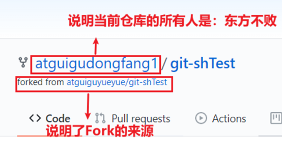
4、别人就可以编辑文件
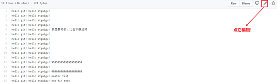
5、编辑后填入信息提交

6、点击pull请求创建一个新的请求

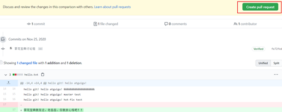

7、回到以前的账号就发现一个pull request请求
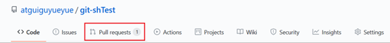
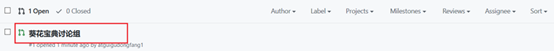
8、可以进入小组进行讨论
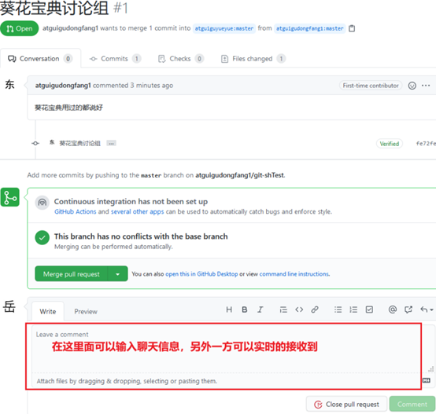

9、如果代码没问题点击Merge pull reque合并


(七)、SSH免密登录
1、进入家目录打开git

2、创建私钥
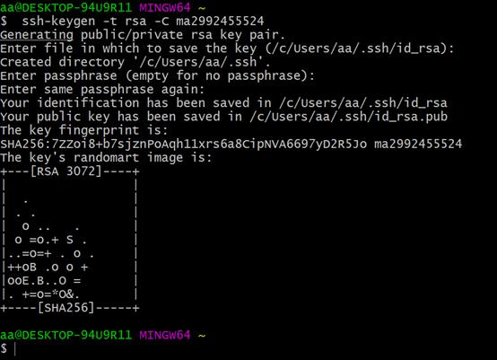
3、查看私钥
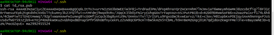
4、应用到github账户上


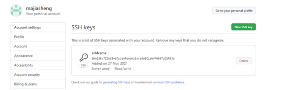
5、复制ssh连接

6、打开git上传测试
四、IDEA使用Git
(一)、配置环境
1、定义配置git提交配置文件
在家目录创建xxxx.ignore的文件,和.gitconfig放在一个目录

2、添加配置
x1# Compiled class file2*.class3\# Log file4*.log5\# BlueJ files6*.ctxt7\# Mobile Tools for Java (J2ME)8.mtj.tmp/9\# Package Files #10*.jar11*.war12*.nar13*.ear14*.zip15*.tar.gz16*.rar17\# virtual machine crash logs, see18http://www.java.com/en/download/help/error_hotspot.xml19hs_err_pid*20.classpath21.project22.settings23target24.idea25*.iml

3、在.gitconfig中连接这个文件夹
[core]
excludesfile = C:/Users/asus/git.ignore

4、IDEA创建一个普通的Maven工程
5、设置IDEA的Git


(二)、创建仓库
变红说明没有存在缓存区
(三)、添加到缓存区
1、单个文件添加
2、多个文件添加

(四)、添加本地库

(五)、版本切换
1、首先创建一个类提交到本地库
2、修改类再次提交


3、查看全部版本
4、切换版本

5、查看这个类
(六)、创建分支
1、查看当前分支
2、创建分支
3、切换分支
(七)、合并分支(正常合并)
1、切换其他分支添加内容,添加了2和3
2、存储缓存区,提交本地库
3、切换到master分支
4、合并master-1分支
5、master的类信息变了
(八)、合并分支(冲突合并)
1、首先来到master-1分支修改类信息
多添加一行master-1 test
2、master-1提交暂存区和本地库
3、切换回master添加类信息
4、提交到缓存区和本地库

5、双方都添加了一行产生冲突,开始合并

6、弹出冲突提示
7、冲突解决界面
8、将master的添加到合并文件中
9、将master-1的添加到master的下面
10、提示可以提交

11、应用
12、查看文件
五、IDEA使用GitHub
(一)、IDEA编译器登录GitHub
1、打开设置查看有没有github
2、如果没有的话去插件仓库下载
3、登录账户

4、很难登上,使用token登录

5、创建一个token


6、复制token,注意一刷新就看不见了

7、IDEA使用token登录

8、登录成功

(二)、使用IDEA创建远程库并上传
1、创建并上传

2、创建中

3、验证

(三)、上传到远程库
1、修改现在的类信息

2、添加暂存区,本地仓库

4、上传到远程仓库

5、默认是https登录

6、设置ssh免密登录


7、添加ssh成功

8、push上传
9、查看

(四)、拉取本地仓库文件
1、修改远程仓库的代码并提交

2、使用IDEA拉取远程仓库文件
3、拉取窗口

4、拉取成功
(五)、克隆远程仓库
1、首先关闭IDEA在本地删除那个项目

2、打开IDEA

3、使用URL获取

4、IDEA根据登录用户自动扫描远程仓库

5、克隆成功

六、Gitee
(一)、创建远程仓库
(二)、上传,拉取,克隆
1、码云的上传,拉取,克隆和github一模一样
(三)、IDEA集成Gitee

(四)、码云导入github项目
1、点击创建项目

2、复制github的Https连接

3、添加现有仓库
4、输入连接导入

5、当github更新后,更新gitee项目

七、GitLab
(一)、安装gitlab
1、准备一台差不多配置的Centos
2、将gitlab镜像上传到/opt/module文件中
3、编写脚本
xxxxxxxxxx91vim gitlab-install.sh2sudo rpm -ivh /opt/module/gitlab-ce-13.10.2-ce.0.el7.x86_64.rpm3sudo yum install -y curl policycoreutils-python openssh-server cronie4sudo lokkit -s http -s ssh5sudo yum install -y postfix6sudo service postfix start7sudo chkconfig postfix on8curl https://packages.gitlab.com/install/repositories/gitlab/gitlabce/script.rpm.sh | sudo bash9sudo EXTERNAL_URL="http://gitlab.example.com" yum -y install gitlabce4、添加执行权限
xxxxxxxxxx11chmod –x gitlab-install.sh
5、执行脚本
xxxxxxxxxx11./gitlab-install.sh
6、初始化GitLab服务
xxxxxxxxxx21gitlab-ctl reconfigure2gitlab Reconfigured! 出现这个为成功
7、开启&关闭服务
xxxxxxxxxx21gitlab-ctl start2gitlab-ctl stop
(二)、创建项目
1、登录
修改本地host文件即可域名和ip都能访问,默认80端口
Gitlab自己会帮你创建一个root的账户,当你进行浏览器访问的时候会让你添加密码
2、创建项目
(三)、IDEA集成GitLab
3、复制链接
4、修改链接(默认给的是一个模板,修改成自己的链接)
http://gitlab-server/root/git-test.git
5、IDEA连接GitLab

6、自定义连接